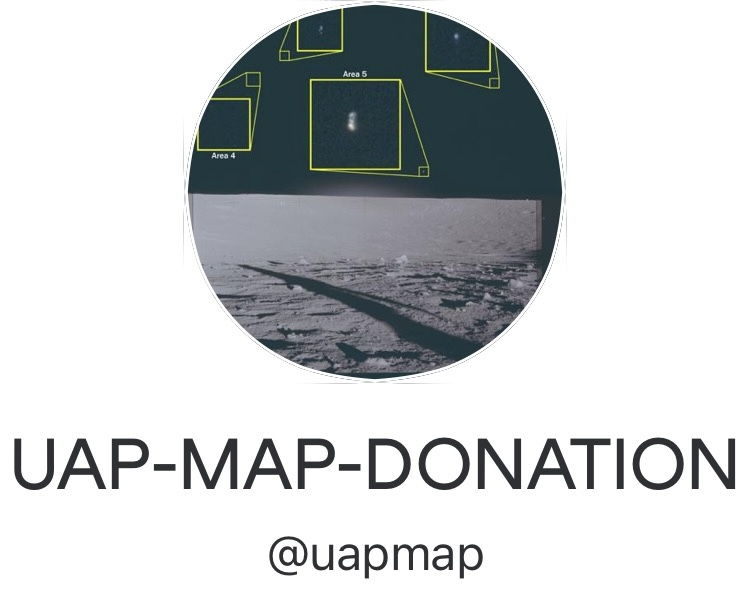

🛸
支持本项目
🗺 返回地图
中
EN
🗺
这是一个非营利、不展示广告的个人维护项目
本站完全免费、不收集用户数据。所有维护费用目前由开发者自费承担。若本站对您有帮助，欢迎通过以下方式打赏一杯咖啡。

Venmo
@uapmap
使用 Venmo App 扫描二维码，或直接搜索 @uapmap
在 Venmo 中打开 ↗
＋
更多付款方式即将上线
（PayPal / 微信 / 支付宝）
感谢您的支持 🛸